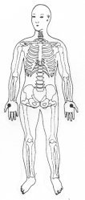
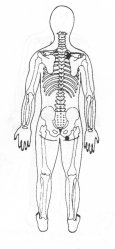

Trava de Segurança da Energia 18 - Terceira Profundidade.
|
 |
TSE 18
¬ Segurar a base do polegar no lado da palma da mão com a outra mão TSE 18. ou
M.e. sobre o ombro direito entre a omoplata e a coluna TSE 3; ® M.d. na nádega direita TSE 25 ® |

|
Notas:1 - M.d. = mão direita M.e. = mão esquerda.2 - O texto sublinhado indica que pode ser feito usando alternadamente o lado direito (mão direita) e depois o lado esquerdo (mão esquerda). 3 - Tocar a área indicada, com a ponta dos dedos da mão, durante alguns minutos ou até sentir uma pulsação rítmica. Não precisamos nos preocupar em demasia com a precisão da área indicada, pois cada trava de segurança da energia tem uma abragência de uns sete centímetros em torno de si.